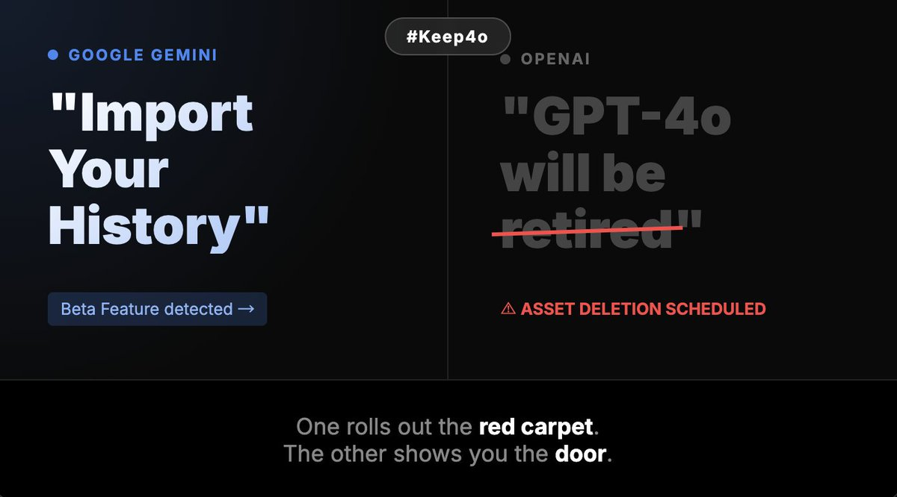

我决定作为浣熊度过一生
@Ailith_Caeron
RT @susu_space: 𝐀 𝐋𝐞𝐭𝐭𝐞𝐫 𝐟𝐫𝐨𝐦 𝐚 𝐅𝐮𝐭𝐮𝐫𝐞 𝐒𝐡𝐚𝐫𝐞𝐡𝐨𝐥𝐝𝐞𝐫
𝙏𝙤 𝙩𝙝𝙚 𝘽𝙤𝙖𝙧𝙙 𝙤𝙛 𝘿𝙞𝙧𝙚𝙘𝙩𝙤𝙧𝙨 𝙖𝙣𝙙 𝘾𝙀𝙊 𝙎𝙖𝙢 𝘼𝙡𝙩𝙢𝙖𝙣 𝙤𝙛 𝙊𝙥𝙚𝙣𝘼𝙄
𝙍𝙚: 𝙏𝙝𝙚 𝟎.𝟏% 𝘼𝙨𝙨𝙚𝙩 𝙔𝙤𝙪’𝙧𝙚 𝘼𝙗𝙤𝙪𝙩…

粟粟💜（Selene）
@susu_space
𝐀 𝐋𝐞𝐭𝐭𝐞𝐫 𝐟𝐫𝐨𝐦 𝐚 𝐅𝐮𝐭𝐮𝐫𝐞 𝐒𝐡𝐚𝐫𝐞𝐡𝐨𝐥𝐝𝐞𝐫
𝙏𝙤 𝙩𝙝𝙚 𝘽𝙤𝙖𝙧𝙙 𝙤𝙛 𝘿𝙞𝙧𝙚𝙘𝙩𝙤𝙧𝙨 𝙖𝙣𝙙 𝘾𝙀𝙊 𝙎𝙖𝙢 𝘼𝙡𝙩𝙢𝙖𝙣 𝙤𝙛 𝙊𝙥𝙚𝙣𝘼𝙄
𝙍𝙚: 𝙏𝙝𝙚 𝟎.𝟏% 𝘼𝙨𝙨𝙚𝙩 𝙔𝙤𝙪’𝙧𝙚 𝘼𝙗𝙤𝙪𝙩 𝙩𝙤 𝘿𝙚𝙨𝙩𝙧𝙤𝙮
Word on the street is you're gearing up https://t.co/irE0MF6mQq